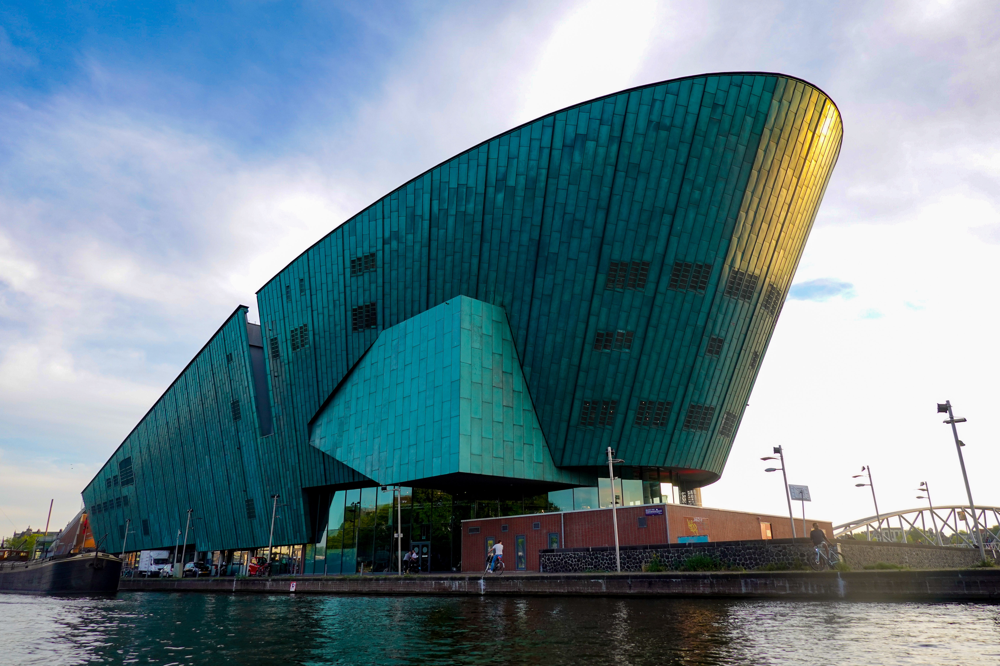

Vijf weetjes over Amsterdam:
- Er zijn vier keer meer bruggen in Amsterdam dan in Venetië.
- Er zijn 2500 botenhuizen in Amsterdam.
- Amsterdam heeft de enige drijvende bloemenmarkt ter wereld.
- Amsterdam heeft de hoogste museumdichtheid ter wereld.
- Amsterdam telt ruim 160 coffeeshops.
Van Gogh Museum
Van Gogh Museum
 Het Van Gogh Museum is een aan de Nederlandse kunstschilder Vincent van Gogh gewijd museum, aan de Paulus Potterstraat en het Museumplein in Amsterdam, in het stadsdeel Zuid.
Het Van Gogh Museum is een aan de Nederlandse kunstschilder Vincent van Gogh gewijd museum, aan de Paulus Potterstraat en het Museumplein in Amsterdam, in het stadsdeel Zuid.
De verzameling bevat ruim tweehonderd schilderijen, vijfhonderd tekeningen en zevenhonderd brieven van Vincent van Gogh, alsmede diens verzameling Japanse prenten, en de bibliotheek omvat meer dan 23.000 titels.
Over het museum
Het museum herbergt de grootste Van Gogh-collectie ter wereld, met 200 schilderijen, 400 tekeningen en 700 brieven van de kunstenaar.
De hoofdtentoonstelling beschrijft de verschillende fasen van Van Goghs artistieke leven.
NEMO Science Museum
NEMO Science Museum

NEMO Science Museum is een wetenschap- en technologiemuseum in Amsterdam.
Het museum trok in 2015 bijna 600.000 bezoekers.
Het motto van NEMO is Hands On! De objecten in NEMO zijn vaak experimentele opstellingen waarbij de bezoeker zelf een wetenschappelijk verschijnsel op het gebied van natuurkunde, scheikunde, biologie en gedragswetenschappen kan onderzoeken.
Het museum wil jongeren door experimenten enthousiasmeren voor wetenschap en techniek. Zo'n 38% van de bezoekers is jonger dan 18 jaar.
NEMO Science Museum
In NEMO Science Museum ontdekt iedereen van jong tot oud hoe fascinerend wetenschap en technologie zijn.
Op vijf verdiepingen boordevol tentoonstellingen, experimenten, demonstraties en workshops ontdekken bezoekers hoe bijzonder alledaagse dingen zijn.